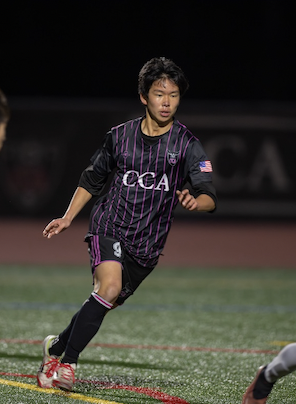
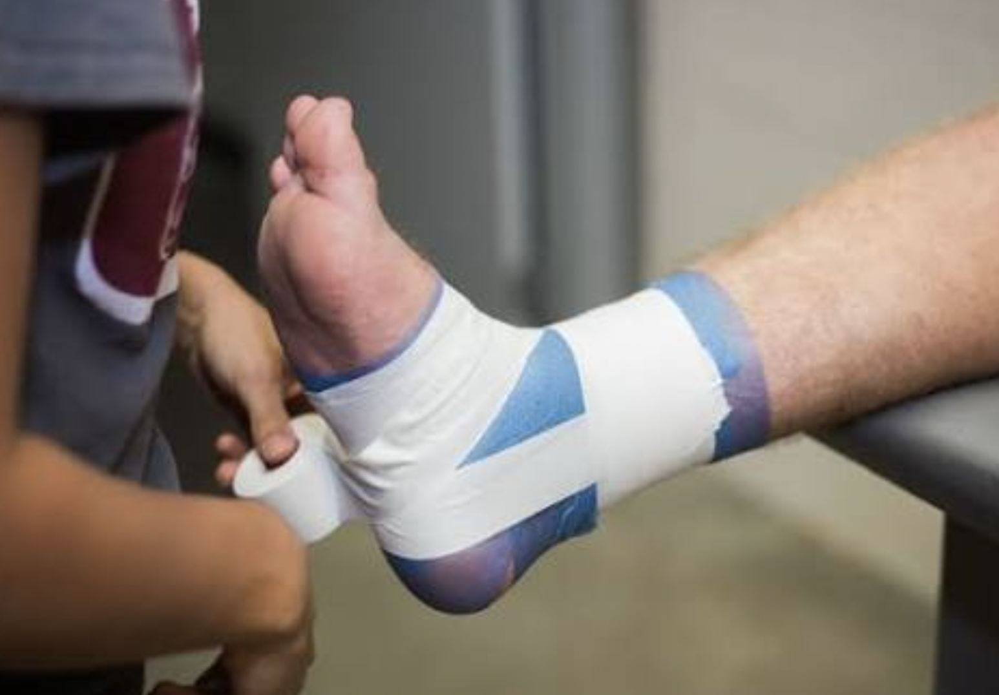

One of the biggest parts of my life is playing soccer. I have been playing soccer for over ten years, and it has become a huge passion of mine. I played for my high school team and my club team. Playing for that long not only allowed me to develop my soccer skills but also essential skills like discipline, responsibility, and how to work well with others. Although my journey is coming to an end, I still work consistently to improve, which I believe is an important quality to have no matter what stage you are at for anything. Because of that, soccer has shaped a big part of who I am today. If you want to learn about a league I played in, you can learn more about it here: ECNL Boys Soccer.

I also love traveling and exploring new places around the world. So far, I have traveled to ten different countries, which has allowed me to experience different cultures and ways of life. Over winter break, I visited England, which served as an eye opener of life in the United Kingdom. Traveling helps me see the world from different perspectives and learn how different people from all over the world live. On top of traveling, I enjoy outdoor activities like skiing and snorkeling. In my free time, I enjoy hanging out with my friends and family, and spending time at the beach. Discover travel tips at Trip Advisor.
In the future, I aspire to become a physical therapist. I would enjoy helping people recover from their injuries firsthand and improve their physical health. Because I have played soccer for so many years, I understand how it feels to be injured firsthand and the importance of staying healthy and taking care of your body. Physical therapists play an important role in helping athletes and others recover and return to their normal activities. I feel like a career where I help other people would be personally fulfilling. Becoming a physical therapist motivates me to work hard in school and prepare for my future. You can learn more about physical therapy by clicking the link here: APTA.
